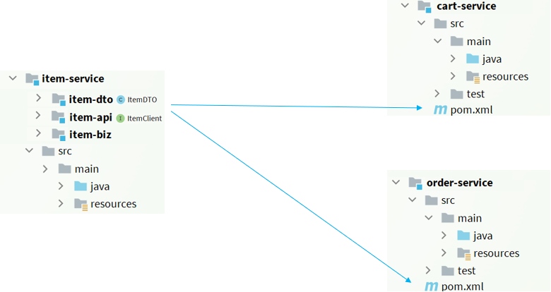
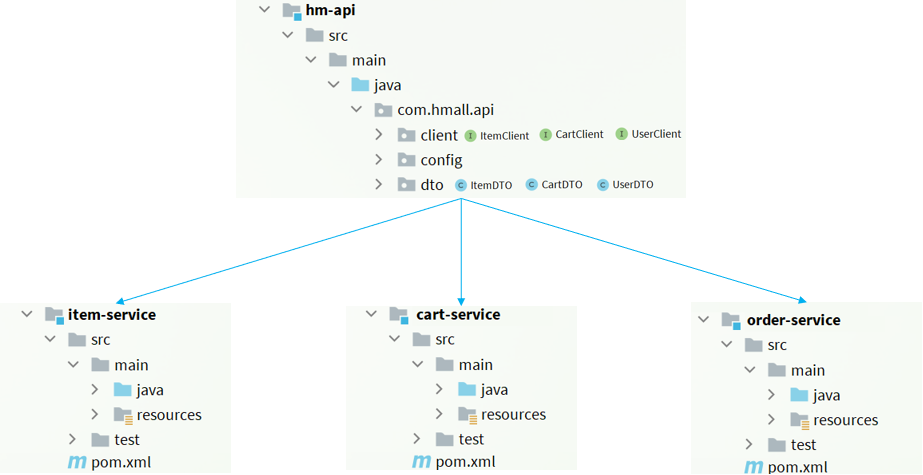

OpenFeign
Spring Cloud 的声明式 REST 客户端。
1. 远程调用
1.1 开启功能
| Java |
|---|
| @SpringBootApplication
@EnableFeignClients
public class Application {
public static void main(String[] args) {
SpringApplication.run(Application.class, args);
}
}
|
[注] 导入 spring-cloud-starter-openfeign ，spring-cloud-starter-loadbalancer 依赖，自动负载均衡
1.2 调用微服务API
| Java |
|---|
| @FeignClient(value = "service-product") // 调用方微服务自动负载均衡
public interface ProductFeignClient {
@GetMapping("/product/{id}")
Product getProduct(@PathVariable("id") Long productId);
}
|
[注] OpenFeign 使用 Loadbalancer 实现自动负载均衡。（客户端负载均衡）
1.3 调用第三方API
| Java |
|---|
| @FeignClient(value = "weather-client", url="http://weather.com") // 第三方负责负载均衡
public interface WeatherFeignClient {
@PostMapping("/api/weather")
String getWeather(@RequestHeader("Authorization") String auth,
@RequestParam("token") String token,
@RequestParam("cityId") String cityId);
}
|
[注] 调用第三方 API 接口，由第三方负责负载均衡。（服务端负载均衡）
1.4 连接池
OpenFeign对Http请求做了优雅的伪装，不过其底层发起http请求，依赖于其它的框架。
- HttpURLConnection：默认实现，不支持连接池
- Apache HttpClient ：支持连接池
- OKHttp：支持连接池
1.5 最佳实践
实践1
将微服务拆分多个子模块，其他微服务直接引入需要模块（适合大型项目）。

实践2
使用一个模块专门存放所有微服务暴露的功能，其他微服务直接引入该模块（适合中小项目）。

2. 日志
2.1 基于配置类
2.1.1 全局配置
| Java |
|---|
| @Configuration
public class FeignConfig {
@Bean
public Logger.Level feignLoggerLevel() {
return Logger.Level.FULL;
}
}
|
2.1.2 局部配置
| Java |
|---|
| // 不设置 @Configuration 注解
public class FeignConfig {
@Bean
public Logger.Level feignLoggerLevel() {
return Logger.Level.FULL;
}
}
// 导入 configuration
@FeignClient(value = "service-product", configuration = FeignConfig.class)
public interface ProductFeignClient {
// ...
}
|
[注] 设置 logging.level.com.example.order.feign=debug
2.2 基于配置文件
| YAML |
|---|
| spring:
application:
name: service-order
cloud:
openfeign:
client:
config:
default: # 全局配置
loggerLevel: NONE
service-product: # 局部配置
loggerLevel: FULL
logging:
level:
com.example.order.feign: debug
|
3. 超时控制
流程：建立连接（连接超时） -> 发送请求 -> 处理业务 -> 返回数据（读取超时）
| YAML |
|---|
| spring:
cloud:
openfeign:
client:
config:
default: # 默认配置, 可自定义 name, value, contextId
connectTimeout: 5000
readTimeout: 5000
|
[注] 多个 FeignClient 接口调用相同服务提供者 (name, vluae相同)，使用 contextId 唯一标识 FeignClient
4. 重试机制
| Java |
|---|
| @Bean
Retryer retryer() {
return new Retryer.Default();
}
|
5. 拦截器
5.1 请求拦截器
5.1.1 基于配置类
| Java |
|---|
| @Component
public class CustomRequestInterceptor implements RequestInterceptor {
@Override
public void apply(RequestTemplate requestTemplate) {
}
}
|
| Java |
|---|
| // 不设置 @Configuration 注解
public class FeignConfig implements RequestInterceptor {
@Override
public void apply(RequestTemplate requestTemplate) {
System.out.println("feignConfig");
}
}
// 导入 configuration
@FeignClient(value = "service-product", configuration = FeignConfig.class)
public interface ProductFeignClient {
// ...
}
|
5.1.2 基于配置文件
| YAML |
|---|
| spring:
application:
name: service-order
cloud:
nacos:
discovery:
server-addr: 127.0.0.1:8848
config:
import-check:
enabled: false
openfeign:
client:
config:
default: # 全局
request-interceptors:
- com.example.order.interceptor.CustomRequestInterceptor
service-product:
request-interceptors: #局部
- com.example.order.interceptor.CustomRequestInterceptor
|
5.2 响应拦截器
6. 兜底返回
Fallback：兜底返回，需要整合 Sentinel 实现
| Java |
|---|
| @Component
public class ProductFeignClientFallback implements ProductFeignClient {
@Override
public Product getProduct(Long productId) {
Product product = new Product();
product.setId(1L);
product.setProductName("fallback");
product.setPrice(new BigDecimal("5.0"));
return product;
}
}
@FeignClient(value = "service-product", fallback = ProductFeignClientFallback.class)
public interface ProductFeignClient {
@GetMapping("/product/{id}")
Product getProduct(@PathVariable("id") Long productId);
}
|
| YAML |
|---|
| feign:
sentinel:
enabled: true # 熔断功能
|
[注] 导入 spring-cloud-starter-alibaba-sentinel 依赖